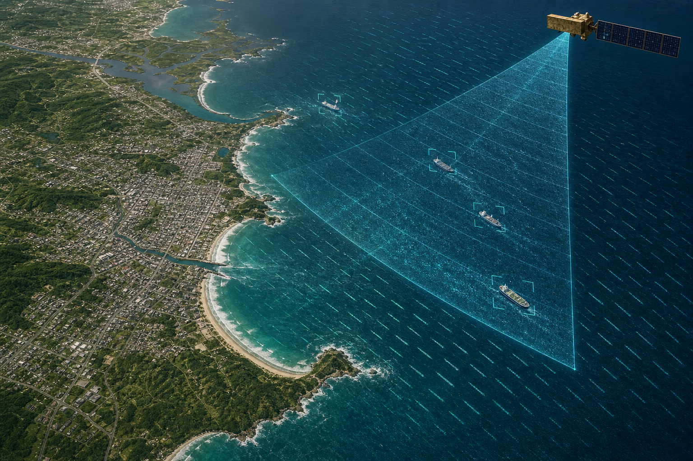
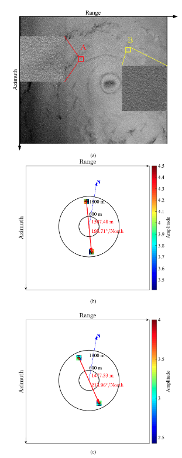
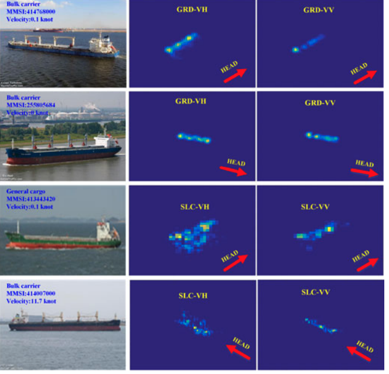

coastal region
Coastal Region
This project uses satellite SAR imagery to monitor the ocean and coastal zone, including storms, ship activity, and wind-driven sea-surface patterns.

Why it matters
Coastal regions are busy and vulnerable. Ships, ports, storms, winds, and coastal hazards can change quickly, often under clouds or at night. Synthetic Aperture Radar is useful because it can observe the ocean surface in almost all weather and provide high-resolution information for monitoring and decision support.
How we measure it
The work studies several coastal and ocean signals in SAR imagery. Ocean-wind research examines radar speckle, the grainy texture in SAR images that can carry information about wind speed. In extreme weather conditions, SAR plays an essential monitoring role because it can penetrate clouds and observe the ocean surface day and night. For this reason, SAR has been widely used for tropical cyclone and wind storm monitoring. The SAR image below was used to map long streaks created by wind structures near the sea surface during a tropical cyclone.

OpenSARShip combines Sentinel-1 radar image with Automatic Identification System (AIS) ship information so researchers can train and compare ship detection and classification methods from modern SAR imagery.

What we learn
Together, these studies show how SAR can support coastal hazard monitoring, ship detection, and wind-speed retrieval. They turn complex radar textures into practical information about storms, vessels, and the ocean surface, helping connect satellite research with coastal applications.